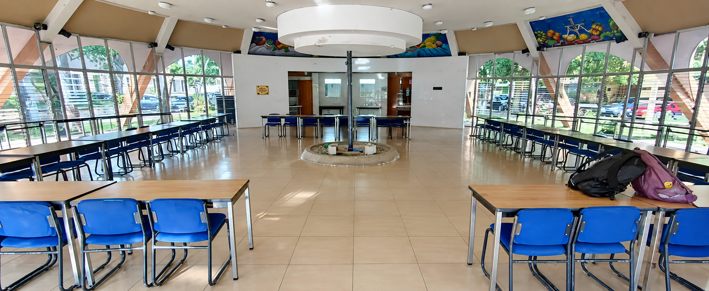
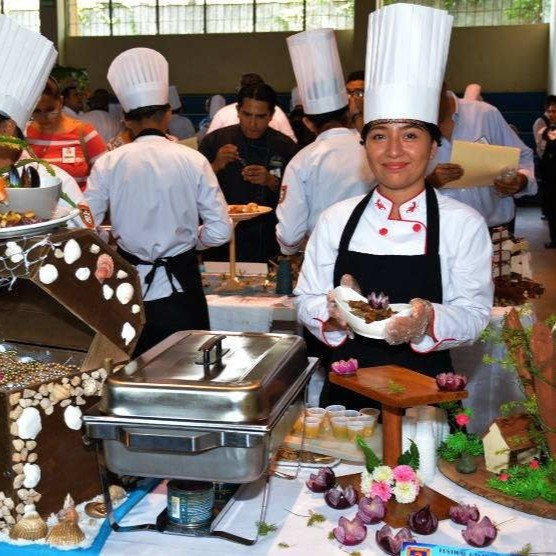
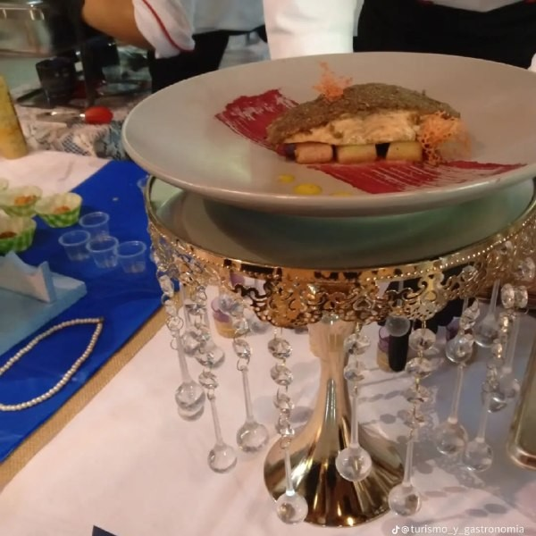
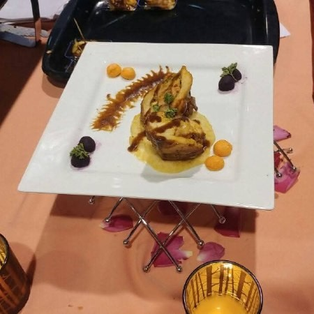

Instituto Nacional General Francisco Menendez
en Servicios Turísticos
Forma estudiantes con conocimientos y habilidades en turismo, atención al cliente, hotelería y promoción de destinos turísticos, preparándolos para brindar servicios de calidad y contribuir al desarrollo turístico de El Salvador.
Conocé nuestra especialidad
Aprendé sobre atención al cliente, organización de eventos, hotelería y promoción de los destinos turísticos de El Salvador.
Preparación para el futuro
Desarrollá conocimientos y habilidades para trabajar en diferentes áreas relacionadas con el turismo y la atención al visitante.
Conocé nuestros años de formación
Descubrí los módulos, conocimientos y competencias que desarrollarás durante el Bachillerato Técnico Vocacional en Servicios Turísticos.
Primer Año
Conocé los fundamentos del turismo, patrimonio, inglés técnico, hotelería y herramientas tecnológicas.
Ver Primer AñoSegundo Año
Descubrí los conocimientos y actividades que forman parte del segundo año de la especialidad.
Ver Segundo AñoTercer Año
Conocé la preparación y competencias correspondientes al último año de Servicios Turísticos.
Ver Tercer Año



SOBRE NOSOTROS
Conocé nuestra especialidad
El Bachillerato Técnico Productivo en Servicios Turísticos del INFRAMEN forma profesionales técnicos capaces de dinamizar el sector turístico local y nacional mediante un enfoque basado en competencias.
A lo largo de 3 años de formación presencial, nuestros estudiantes desarrollan habilidades operativas y de gestión en patrimonio cultural, servicios gastronómicos, alojamiento, guianza técnica e inglés aplicado.
Patrimonio y Promoción
Promoción y puesta en valor del patrimonio natural, histórico y cultural de El Salvador
Hotelería y Gastronomía
Gestión de servicios de alojamiento y preparación de alimentos bajo normas de calidad e higiene.
Guianza e Inglés Técnico
Conducción de turistas y atención con comunicación técnica en idioma inglés.
Contáctanos
Si deseas conocer más sobre el Bachillerato Técnico Vocacional en Servicios Turísticos, puedes comunicarte con nosotros.
Numero de Contacto
+503 7862-5144
Especialidad
Servicios Turísticos
Ubicación
20 Avenida Norte y 29 Calle Oriente, Colonia Atlacatl